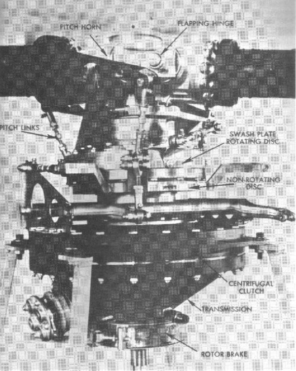

In the preceding Chapter, the control system and its functions were discussed in detail. In this Chapter, some of the other components and their functions will be discussed briefly to give the readers some familiarity with the aircraft they will be flying.
The transmission system transmits engine power to the
main rotor, tail rotor, generator, and other accessories.
The engine of a helicopter must operate at a
relatively high speed while the main rotor turns at a much lower speed. This
speed reduction is accomplished through reduction gears in the transmission
system and is generally somewhere between 6 to 1 and 9 to 1 (that is,
between 6 and 9 engine RPM's to 1 main rotor RPM). In a helicopter with a 6
to 1 ratio, if the engine turns at 2700 RPM, the main rotor turns at 450
RPM. With a 9 to 1 ratio, if the engine turns at 2700 RPM, the main rotor
turns at 300 RPM. When the rotor tachometer needle and the engine tachometer
are super imposed over each other (fig. 29
), the ratio of the engine RPM to the rotor RPM is the same as the gear
reduction ratio.
In the conventional airplane, it is standard practice
to have the engine and the propeller permanently connected. The propeller
serves as a flywheel; there is no reason for the propeller to be at a
standstill when the engine is running. In the helicopter, there is a
different relation between the engine and rotor.
Because of much greater weight of a helicopter rotor
in relation to the power of the engine than the weight of a propeller in
relation to the power of the engine in an airplane, it is necessary to have
the rotor disconnected from the engine to relieve the starter load. For this
reason, it is necessary to have a clutch between the engine and rotor. The
clutch allows the engine to be started and gradually assume the load of
driving the heavy rotor system.
Centrifugal clutch
The clutch does not provide disengagement of the
engine from the rotor system for autorotation.
This is provided through another device.
In this type of clutch, contact between the inner and
outer parts of the clutch is made by the spring-loaded clutch shoes. The
inner portion of the clutch, the clutch shoes, is rotated by the engine;
the outer portion of the clutch, the clutch drum, is connected to the main
rotor through the transmission. At low engine speeds, the clutch shoes are
held out of contact with the clutch drum by the springs. As engine speed
increases, centrifugal force throws the clutch shoes outward until they
contact the clutch drum and motion is transmitted from the engine drive
shaft to the input drive shaft of the transmission. The rotor starts to
turn, slowly at first, but with increasing speed as the friction between the
clutch shoes and drum increases. Slippage of the clutch will be experienced
until this friction develops sufficiently to drive the drum at engine RPM.
As the clutch becomes fully engaged, the rotor system will be driven at
the equivalent of engine RPM and the rotor tachometer needle and engine
tachometer needle will join or "marry," that is, one needle will
be superimposed over the other.
The rotor RPM equivalent to the engine RPM depends
upon the gear reduction ratio between the engine
and rotor system for the particular helicopter.
(See Transmission System.)
Friction or belt drive system clutch
This type of clutch is manually engaged by the pilot through a lever in the cockpit. Power from the engine drive shaft is transmitted to the transmission drive shaft by a series of friction discs or belts. With this type of clutch, it is possible to start the engine and warm it up without engaging the rotor.
The freewheeling coupling provides for autorotative capabilities by automatically disconnecting the rotor system from the engine when the engine stops or slows below the equivalent of rotor RPM. When the engine is disconnected from the rotor system through the automatic action of the freewheeling coupling, the transmission continues to rotate with the main rotor thereby enabling the tail rotor to continue turning at its normal rate. This permits the pilot to maintain directional control during autorotation.
The swash plate consists of two primary elements
through which the rotor mast passes (figs.
34, 36, and
37). One element is a disc, linked to
the cyclic pitch control. This disc is capable of tilting in any direction
but does not rotate as the rotor rotates. This nonrotating disc, often
referred to as the "stationary star," is attached by a bearing
surface to a second disc, often referred to as the
"rotating star," which turns with the rotor and is mechanically
linked to the rotor blade pitch horns.
The rotor blade pitch horns are placed approximately
90° ahead of or behind the blade on which they control the pitch change
(figs, 34 and
37). If this were not done, gyroscopic
precession would cause the movements of the helicopter to be 90° out of
phase with the movement of the cyclic pitch stick, that is, if the cyclic
stick were displaced to the right, the helicopter would move forward; if the
cyclic stick were displaced forward, the helicopter would move to the left,
and so on.
Figure 33.- Rotor blade pitch horns are located 90°
ahead of or behind (depending on the manufacturer) the
rotor blade so that helicopter reaction will be in the
direction of cyclic stick displacement.
The illustration in figure 33 shows the pitch horns 90° ahead of the blade in the plane of rotation. Figure 37 shows them 90° behind. whether they are ahead of or behind the blade will depend on the mechanical linkage arrangement between the cyclic stick, swash plate, and pitch horns. It might help to understand the relationship between cyclic stick movement and blade pitch change if the relationship between cyclic stick movement and the rotor blade pitch horn is understood. If the pitch horn is 90° ahead of the blade, blade pitch decrease takes place as the pitch horn passes the direction in which the cyclic stick is displaced. Blade pitch increase takes place as the pitch horn passes the direction opposite to the displacement. If the pitch horn is 90° behind the blade, blade pitch decrease takes place as the pitch horn passes the direction opposite to the displacement of the cyclic stick. Blade pitch increase takes place as the pitch horn passes the direction of displacement. In either case, however, blade pitch decrease takes place 90° ahead of cyclic stick position and blade pitch increase takes place 90° after passing cyclic stick position. Thus, maximum downward deflection of the rotor blades occurs in the same direction as cyclic stick displacement, and maximum upward deflection occurs in the opposite direction.

Courtesy Brantly Helicopter Corporation
Figure 34.- Various components of the Rotor System in One
Helicopter.
As an example, when the cyclic stick is displaced forward, the swash plate nonrotating disc tilts forward and the swash plate rotating disc follows this forward tilt (fig. 35). Since the mechanical linkage from the rotating disc to the rotor blade pitch horns is 90° ahead of or behind the cyclic pitch change, the pitch angle is decreased as the rotor blades pass 90° to the pilot's right and increased as the rotor blades pass 90° to the pilot's left. Because of gyroscopic precession, maximum blade defection occurs 90° later in the cycle of rotation. Thus, maximum downward deflection of the rotor blades is forward (same direction as cyclic stick displacement) and maximum upward deflection is aft, causing the rotor disc to tilt forward in the same direction as cyclic stick displacement.
Figure 35.- Cyclic stick movements are transmitted by a
mechanical linkage through the swash plate
to the rotor pitch horns
and result in a change in the pitch angle of each rotor blade.
There are three fundamental types of main rotor systems: fully articulated rotors, semirigid rotors, and rigid rotors.
Fully articulated rotor systems
Fully articulated rotor systems generally consist of
three or more rotor blades. In a fully articulated rotor system, each rotor
blade is attached to the rotor hub by a horizontal hinge, called the
flapping hinge, which permits the blades to flap up and down. Each blade can
move up and down independently of the others. The flapping hinge may be
located at varying distances from the rotor hub, and there may be more than
one. The position is chosen by each manufacturer, primarily with regard to
stability and control.
Each rotor blade is also attached to the hub by a
vertical hinge, called a drag or lag hinge, that permits each blade,
independently of the others, to move back and forth in the plane of the
rotor disc. This movement is called dragging, lead-lag, or hunting. The
location of this hinge is chosen primarily with regard to controlling
vibration. Dampers are normally incorporated in design of this type rotor
system to prevent excessive motion about the drag hinge. The purpose of the
drag hinge and dampers is to absorb the acceleration and deceleration of the
rotor blades caused by coriolis effect. Figure
37 points out the flapping hinges and
drag hinges.
The blades of a fully
articulated rotor can also be feathered, that is, rotated about their
spanwise axis. To put it more simply, feathering means the automatic and
periodic changing of the pitch angle of the rotor blades.
Summarizing then, each blade of a fully articulated
rotor system can flap, drag, and feather independently of the other blades.
In a semirigid rotor system, the rotor blades are
rigidly interconnected to the hub, but the hub is free to tilt and rock with
respect to the rotor shaft. In this system, only two-bladed rotors are used.
The rotor flaps as a unit, that is, as one blade flaps up, the other blade
flaps down an equal amount.
The hinge which permits the flapping or see-saw effect
is called a teetering hinge (fig. 38).
The rocking hinge is perpendicular to the teetering hinge and parallel to
the rotor blades. This hinge allows the head to rock in response to tilting
of the swash plate by cyclic pitch control, thus changing the pitch angle an
equal amount on each blade--decreasing it on one and increasing it on the
other.
The rotor blades of a semirigid rotor system may or
may not require drag hinges depending on whether the system is
"underslung." In an underslung system, the rotor blades lie in a
plane below the plane containing the rotor hub pivot point. Because of
coning, normal rotor operating RPM will place the center of mass of the
rotor blades in approximately the same plane as the rotor hub pivot point.
Consequently, the distance of the center of mass from the axis of rotation
varies very little. Drag hinges are not needed since the hunting action can
be absorbed through blade bending and the movement of the gimbal in the
underslung system.
Collective pitch control changes the pitch of each
blade simultaneously and an equal amount, either increasing the pitch of
both or decreasing the pitch of both.
Summarizing, a semirigid rotor system can flap and
feather as a unit.
In a rigid rotor system the blades, hub, and mast are
rigid with respect to each other. In this system, the blades cannot flap or
drag but can be feathered.
Extensive research is being done in this area and, at
the time of this writing, two makes of rigid rotor helicopters have received
FAA certification.
Courtesy Bell Helicopter Corporation
Figure 36.- Swash plate system for one helicopter.
Courtesy Hughes Tool Company, Aircraft Division
Figure 37.- Various components of the rotor system in one
helicopter.
Courtesy Bell Helicopter Corporation
Figure 38.- Teetering and rocking hinges on a two-bladed
rotor system.
{kind=link}
{kind=link}
{kind=link}
{kind=link}
{kind=link}
{kind=link}